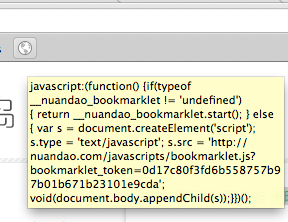

Javascript Bookmarklet
Peter Wong
Aug 30, 2011
Peter Wong
Aug 30, 2011

a link (<a> tag) having javascript in its href attribute
<a href="javascript: alert('halo'); return false;">Bookmarklet</a>
<a href="javascript: (function() {
window.open('http://example.com')
})(); return false;">Bookmarklet</a>
<a href="javascript:
document.write('clean the page XD');
return false">Bookmarklet</a>
<a>I am Bookmarklet</a>
<a href='javascript:void(0)'>I am Bookmarklet</a>
<a href='javascript:alert('halo'); void(0)'>I am Bookmarklet</a>
Sometimes (most likely actually) our code to be executed would be a few hundreds lines. Isn't the previous example too simple?
......
Remember, you could execute any valid JS code! (XSS..? behave yourself :))
So, your code write code to include any other javascript / css files!
See how now ~>
<a href="javascript: (function() {
var script = document.createElement('script');
script.src='http://example.com/javascript.js';
document.body.appendChild(script);
})(); return false">Bookmarklet</a>
// http://example.com/javascript.js
// one suggestion template:
if(window.my_library_defined === undefined) {
// your code goes here...
window.my_library_defined = true;
}
// (so a user pressed multiple times won't redefine your code!)
If you are planning to create some elements on the page...
!important in css
So you have imported your first script by creating a script tag in the bookmarklet's href, remember?
You may want to import more javascript / css files by using the same technique inside your script
But remember, they are loaded asynchronously!
window.setInterval / window.setTimeout